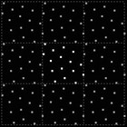
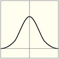

Anti-Aliasing¶
A computer generated image is made up of pixels; each pixel can of course only be a single color. In the rendering process the rendering engine must therefore assign a single color to each pixel on the basis of what object is shown in that pixel. This often leads to poor results, especially at sharp boundaries, or where thin lines are present, and it is particularly evident for oblique lines.
To overcome this problem, which is known as Aliasing, it is possible to resort to an Anti-Aliasing technique. Basically, each pixel is ‘oversampled’, by rendering it as if it were five pixels or more, and assigning an ‘average’ color to the rendered pixel.
The buttons to control Anti-Aliasing, or OverSampling (OSA), are below the rendering button in the 渲染 Panel (渲染 Panel.).
Options¶
- Anti-Aliasing (check box)
- Enables oversampling
- 5, 8, 11, 16
- The number of samples to use. The values 5, 8, 11, 16 are preset numbers in specific sample patterns; a higher value produces better edges, but slows down the rendering.
By default, we use in Blender a fixed “Distributed Jitter” table. The samples within a pixel are distributed and jittered in a way that guarantees two characteristics:
- Each sample has equal distances to its neighbor samples
- The samples cover all sub-pixel positions equally, both horizontally and vertically
The images below show Blender sample patterns for 5, 8, 11 and 16 samples. To show that the distribution is equalized over multiple pixels, the neighbor pixel patterns were drawn as well. Note that each pixel has an identical pattern.
5 samples. |
8 samples. |

11 samples. |

16 samples. |
- Full Sample
- For every anti-aliasing sample, save the entire 渲染 Layer results. This solves anti-aliasing issues with compositing.
Filtering¶
When the samples have been rendered, we’ve got color and alpha information available per sample. It then is important to define how much each sample contributes to a pixel.
The simplest method is to average all samples and make that the pixel color. This is called using a “Box Filter”. The disadvantage of this method is that it doesn’t take into account that some samples are very close to the edge of a pixel, and therefore could influence the color of the neighbor pixel(s) as well.
Filter menu: Set The filter type to use to ‘average’ the samples:
- Box
A low-quality box-shaped curve
Note
This filter is relatively low quality. you can see that only the samples within the pixel itself are added to the pixel’s color. For the other filters, the formula ensures that a certain amount of the sample color gets distributed over the other pixels as well.
- Tent
- A simplistic filter that gives sharp results
- Quadratic
- A Quadratic curve
- Cubic
- A Cubic curve
- Gauss
- Gaussian distribution, the most blurry
- Catmull-Rom
- Catmull-Rom filter, gives the most sharpening
- Mitchell-Netravali
- a good all-around filter that gives reasonable sharpness

Box. |

Tent. |

Quadratic. |

Cubic. |

Gaussian. |

Catmull-Rom. |

Mitchell-Netravali. |
Filter Size¶
Making the filter size value smaller will squeeze the samples more into the center, and blur the image more. A larger filter size makes the result sharper. Notice that the last two filters also have a negative part; this will give an extra sharpening result.
例子¶
{kind=link}

AA 8, Box filter.

AA 8, Tent filter.

AA 8, Quadratic filter.

AA 8, Cubic filter.

AA 8, Gaussian filter.

AA 8, Catmull-Rom filter.

AA 8, Mitchell-Netravali filter.